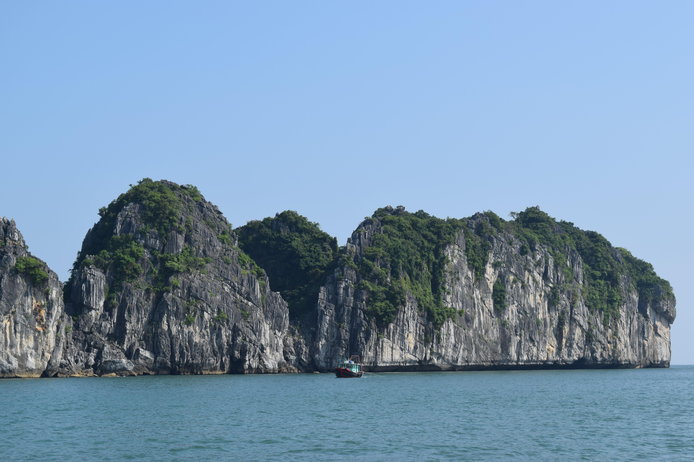
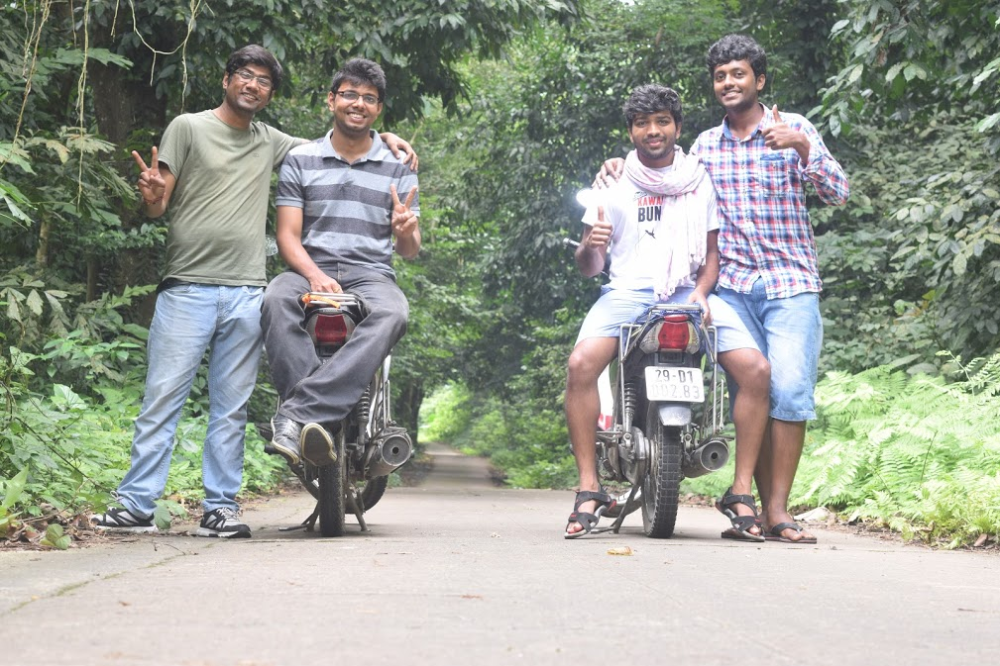
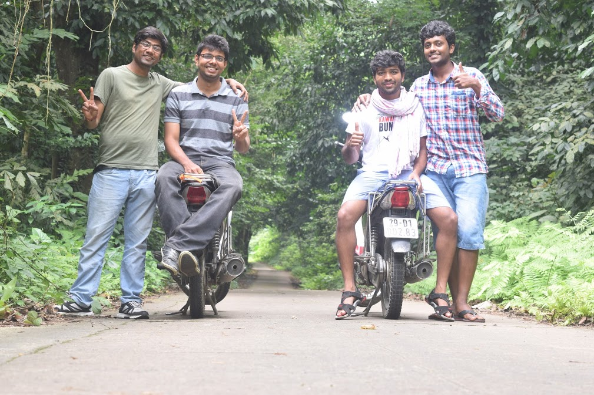
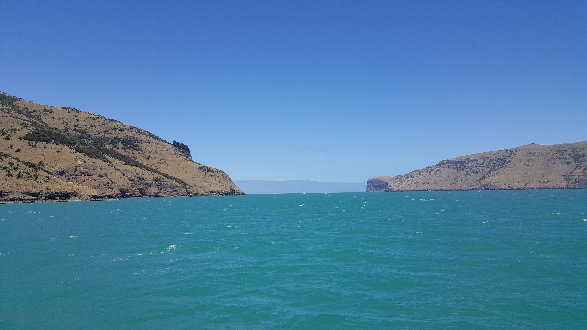
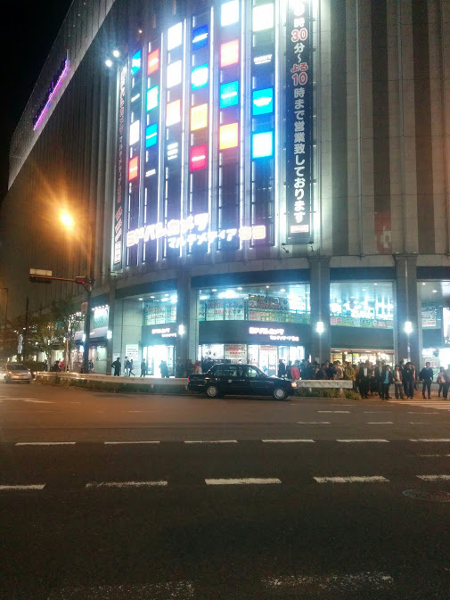
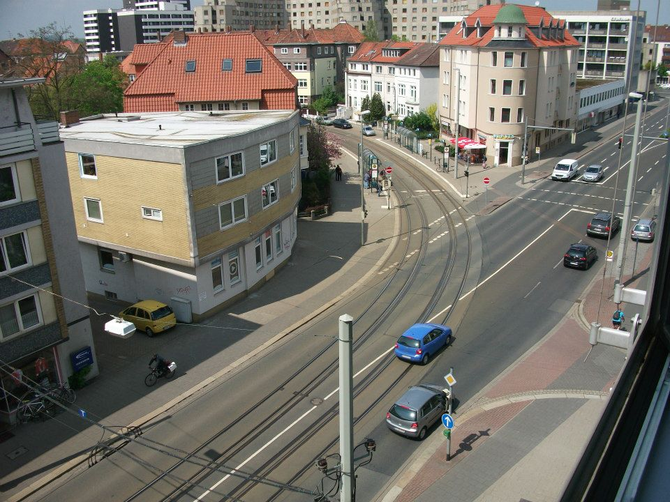
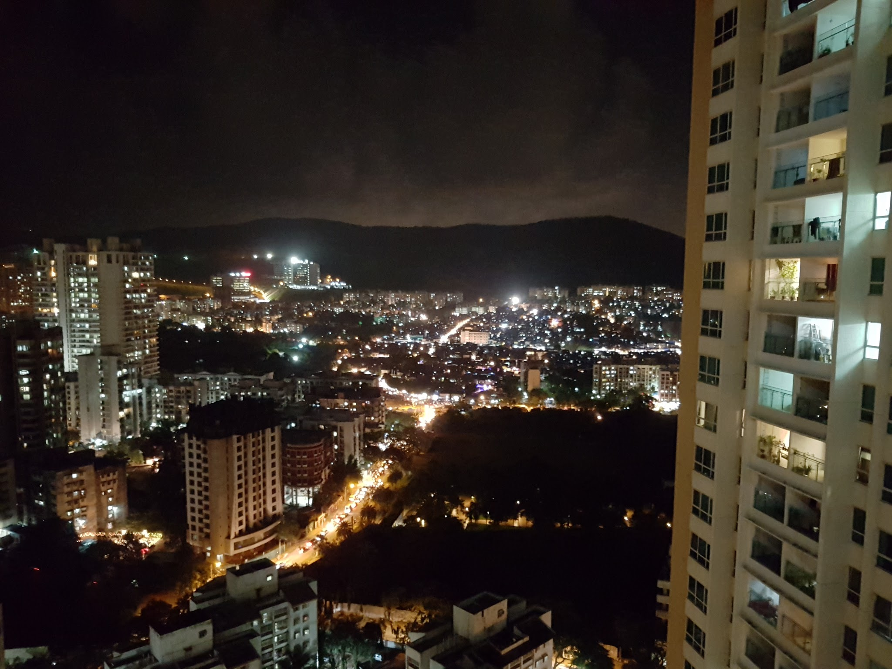

Personal
I am from Aurangabad, a city in India. It is the gateway to the world heritage sites of Ajanta and Ellora caves and named after the Mughal Emperor, Aurangzeb. Later I completed my high school, under-graduate studies in Mumbai and have been in there ever since.
Currently I live in Seoul since September 2015. I can speak in English, Hindi, Marathi and currently learning to speak Korean.
Things I am passionate about:
- Listening to music. I listen to classical musical. Current favourite artists: A. R. Rahman, Anoushka Shankar.
- Playing Badminton and Football.
- Currently learning to play a Keyboard
Vietnam, September 2016

Cat ba, Halong Bay
 Cuc Phuong National Park
 Cuc Phuong National Park
New Zealand, December 2015

Akaroa Harbour, Christchurh
 Hobbit's house, Hobitton
Hobbit's house, Hobitton
Hobbit's house, Hobitton
Japan, October 2015

Osaka
 TRANSDEC testing facility, San-Diego
TRANSDEC testing facility, San-Diego
 San-Diego
San-Diego
California, United States, July 2015
TRANSDEC testing facility, San-Diego
San-Diego
Europe

View from my intern office in Germany
Rhine Valley
Rhine Valley
Mumbai, India

The City that never sleeps!